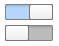

Switch QML Type
A switch. More...
| Import Statement: | import QtQuick.Controls 1.4 |
| Since: | Qt 5.2 |
| Inherits: |
Properties
- activeFocusOnPress : bool
- checked : bool
- exclusiveGroup : ExclusiveGroup
- pressed : bool
Signals
- clicked()
Detailed Description

On and Off states of a Switch.
A Switch is a toggle button that can be switched on (checked) or off (unchecked). Switches are typically used to represent features in an application that can be enabled or disabled without affecting others.
On mobile platforms, switches are commonly used to enable or disable features.
Column { Switch { checked: true } Switch { checked: false } }
You can create a custom appearance for a Switch by assigning a SwitchStyle.
Property Documentation
activeFocusOnPress : bool |
This property is true if the control takes the focus when it is pressed; forceActiveFocus() will be called on the control.
checked : bool |
This property is true if the control is checked. The default value is false.
exclusiveGroup : ExclusiveGroup |
This property stores the ExclusiveGroup that the control belongs to.
[read-only] pressed : bool |
This property is true when the control is pressed.
This property was introduced in QtQuick.Controls 1.3.
Signal Documentation
This signal is emitted when the control is clicked.
This signal was introduced in QtQuick.Controls 1.3.